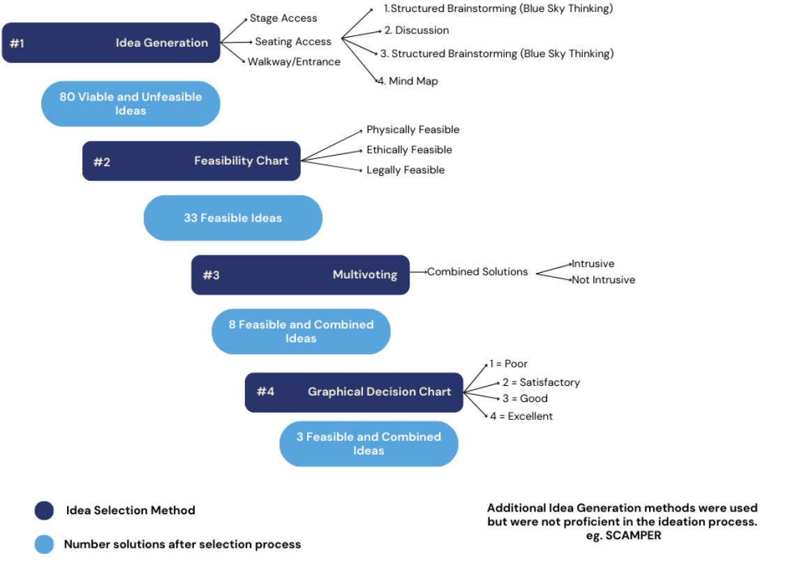

This project focused on addressing accessibility challenges within Hart House Theatre, including inadequate accessible seating, a non-compliant slope, and lack of stage access for individuals with mobility limitations. The scope was confined to the theatre’s physical envelope, with the primary goal of creating an inclusive environment that met the Toronto Accessibility Design Guidelines (TADG) while remaining unobtrusive during performances.
The project began with defining the functions, objectives, and constraints. The primary function was to facilitate inclusive access to seating, walkways, and the stage. Objectives included ensuring safety, efficiency, and ease of navigation, while constraints required year-round functionality, compliance with TADG codes, and maintaining the theatre’s aesthetics during performances. Stakeholders included patrons, theatre staff, performers, financial donors, and the City of Toronto.
As a team, we generated 30 feasible solutions, which were refined through a structured design process that included feasibility checks, multivoting, a graphical decision chart, and the Pugh Method. A flowchart of this process is displayed below:
From this, three final alternatives were shortlisted:
The primary solution was selected as optimal, as it best aligned with the project objectives while balancing feasibility and intrusiveness. To validate the design, two testing pathways were planned: (1) physical feasibility testing, using on-site measurements followed by city approval, and (2) simulation testing, creating a 3D model to assess effectiveness against objectives, later audited by a professional for compliance.